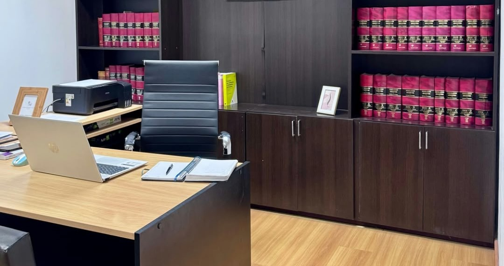

Derecho de Familia
Asesoramiento y representación en cuestiones relacionadas con los vínculos familiares y sus consecuencias jurídicas.
- Divorcios
- Alimentos
- Cuidado personal
- Régimen de comunicación
- Filiación
- Compensación económica

ABOGADO DE FAMILIA EN CÓRDOBA
Te acompaño en situaciones familiares y sucesorias que requieren claridad, estrategia y confianza, brindándote un asesoramiento profesional y personalizado.
Solicitar consultaÁREAS DE PRÁCTICA
Cada situación familiar requiere una mirada particular. Mi trabajo es ayudarte a comprender tus opciones y definir el camino más conveniente para tu caso.
Asesoramiento y representación en cuestiones relacionadas con los vínculos familiares y sus consecuencias jurídicas.
Acompañamiento durante el proceso sucesorio para ordenar la situación patrimonial y avanzar con claridad.
MI FORMA DE TRABAJAR
Creo en una abogacía cercana, clara y humana.
Cuando una persona atraviesa una situación familiar, no necesita solamente conocer qué dice la ley. Necesita comprender qué puede hacer, qué alternativas tiene y cuál es el camino más conveniente para su situación.
Por eso trabajo de manera personalizada, escuchando cada caso y explicando las distintas posibilidades con claridad, para que puedas tomar decisiones con mayor seguridad.
Mi objetivo es que, además de recibir una respuesta jurídica, encuentres tranquilidad y confianza para avanzar.
CONOCÉ A RODRIGO
Próximamente vas a poder conocerme un poco más en este video.
Video de presentación
MISIÓN, VISIÓN Y VALORES
Acompañar con profesionalismo y empatía para ofrecer soluciones justas.
Ser un referente en Derecho de Familia y Sucesiones, reconocido por ofrecer un servicio humano, cercano y eficaz.
Empatía, compromiso, transparencia, confidencialidad, respeto, cercanía, simplicidad y profesionalismo.
¿QUERÉS CONTARME TU SITUACIÓN?
Una primera consulta puede ayudarte a comprender dónde estás parado y cuáles son las alternativas que tenés.